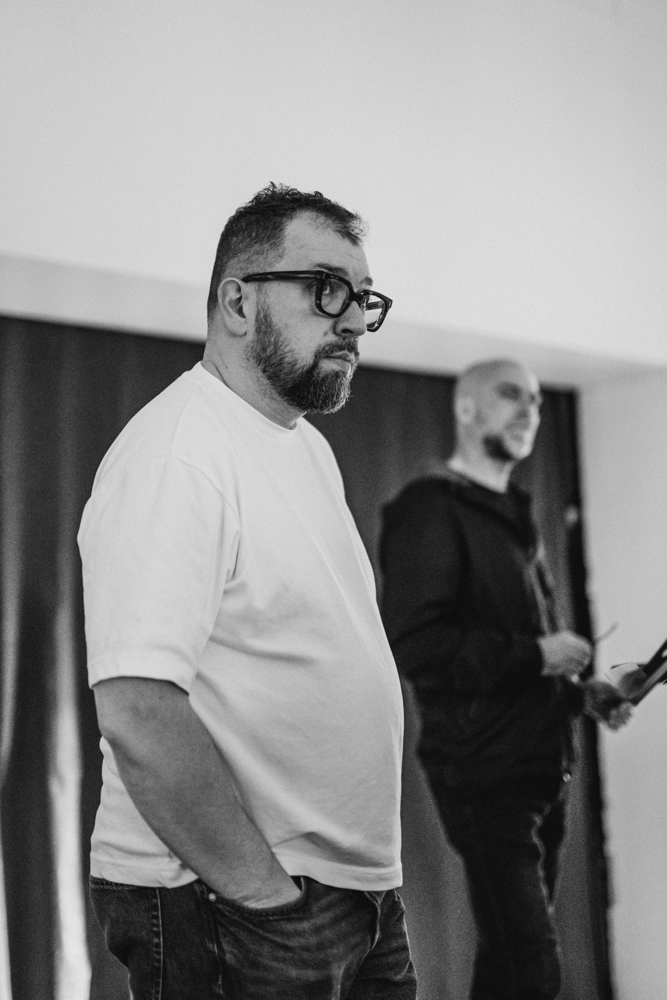
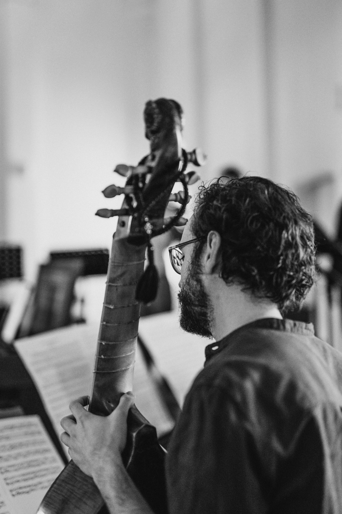
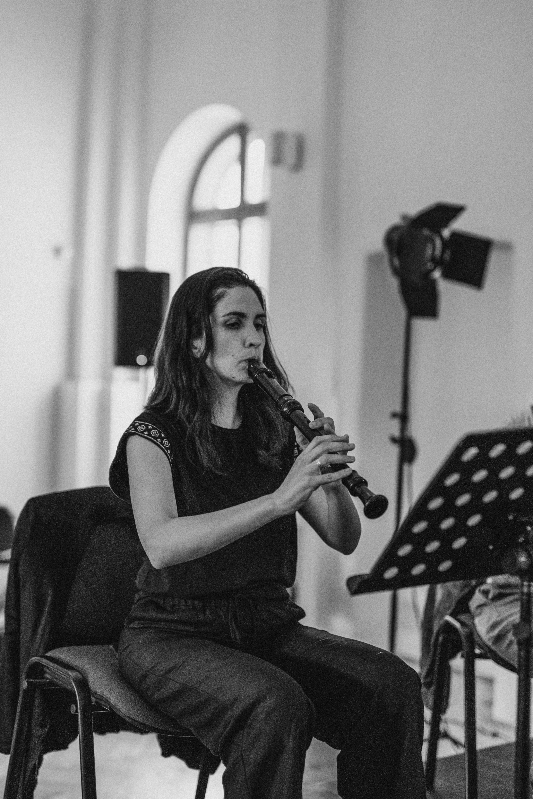

Vođstvo radionice
Radoslava Vorgić Žuržovan
sopran i vokalni pedagog na projektu

Održani projekat · Novi Sad · 2026
Interdisciplinarni projekat o pomirenju koji je kroz muziku, tekst, pokret i zajedničko učešće otvorio prostor za susret istorijskog pamćenja i savremenog iskustva.
Ovaj projekat sufinansira Evropska unija.
District of Reconciliation
The Bridge Cantata razvijena je kao društveno angažovan interdisciplinarni projekat u okviru programa „Umetnost za pomirenje“. Umesto jednokratne koncertne najave, projekat je postao zaokruženo iskustvo koje je povezalo muziku, tekst, pokret, radionicu i javno izvođenje.
Kroz susret Bahovih korala, novog dela Davida Mastikose Naše vreme i dramaturškog okvira Mine Petrić, otvoren je prostor u kome se istorijski i savremeni glasovi ne suprotstavljaju, već razgovaraju.
Projekat je okupio umetnike, mlade muzičare i publiku oko pitanja sećanja, dijaloga i mogućnosti pomirenja, ne kao apstraktne ideje, već kao procesa koji se gradi kroz prisustvo, pažnju i zajedničko slušanje.
Dramaturški okvir
Tekst Mine Petrić postavio je jedno od ključnih pitanja projekta: šta zapravo pripada našem vremenu i kako sadašnjost razgovara sa onim što smatramo prošlošću.
U tom okviru, barok nije bio predstavljen kao stil udaljen od nas, već kao ogledalo i odjek: kulturna memorija koju prepoznajemo kroz savremeni glas, telo i zajednicu.
„Šta je naše vreme i možemo li vreme posedovati ili ono poseduje nas? Mi gledamo u barok i prepoznajemo se kao odraz. Ili odjek.“
Mina Petrić, dramaturškinja i autorka teksta
Proces rada
Otvorena radionica održana 18. aprila 2026. u American Corner-u u Novom Sadu bila je važan korak u razvoju projekta. Kroz rad na Bahovim koralima, učesnici su istraživali odnos glasa, retorike i strukture, a deo tog procesa kasnije je nastavljen i u završnom izvođenju.
Umetnički tim radio je kroz niz susreta, online sastanaka, razmene materijala i scenskih proba. Zbog toga ova stranica sada funkcioniše kao dokumentacija procesa, a ne samo kao najava događaja.
Vođstvo radionice
sopran i vokalni pedagog na projektu
Saradnja
klavijaturistkinja i saradnica na radionici
Novo delo
Naše vreme kao savremeni muzički most prema Bahu
Galerija proba
Ove fotografije beleže atmosferu proba: rad sa instrumentima, zajedničko slušanje, pripremu ansambla i detalje prostora u kome se projekat razvijao pre završnog izvođenja.







Koncert
Ovaj izbor fotografija beleži publiku, izvođače, scenski pokret i zajednički trenutak završnog susreta projekta sa publikom.


Medijski materijali
Video odlomci
Ovaj blok je pripremljen za kratke video odlomke sa proba i završnog izvođenja čim MP4 fajlovi budu dodati u
assets/videos/bridge-cantata/.
Muzika Davida Mastikose
Novo delo Davida Mastikose napisano za tekst Mine Petrić čini savremeni sloj projekta i njegov najjasniji dijalog sa temama pamćenja, pomirenja i sadašnjosti.
Dodatne fotografije
Galerije proba i završnog izvođenja su sada postavljene. Stranica ostaje spremna za naredne blokove: online sastanke, volonterski rad i dodatnu dokumentaciju procesa.
Projektni tim